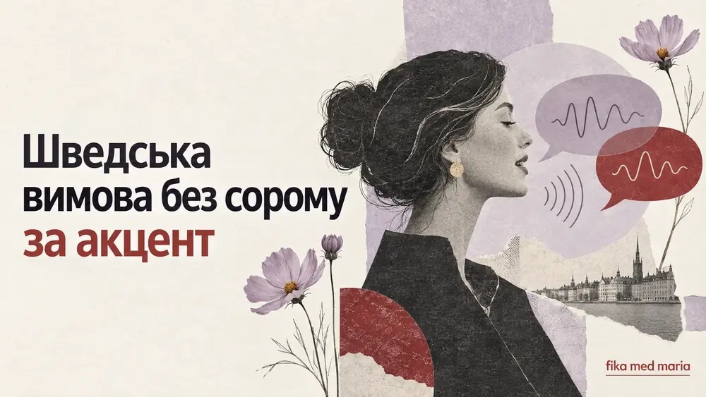
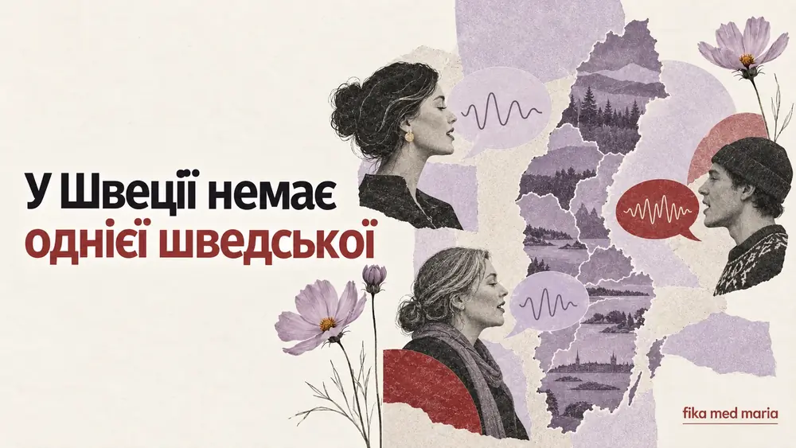
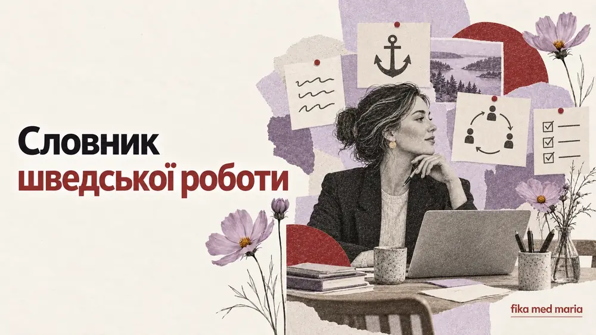
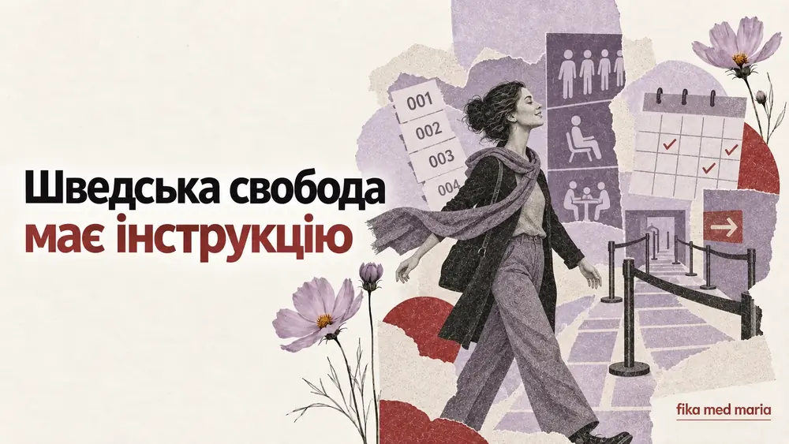
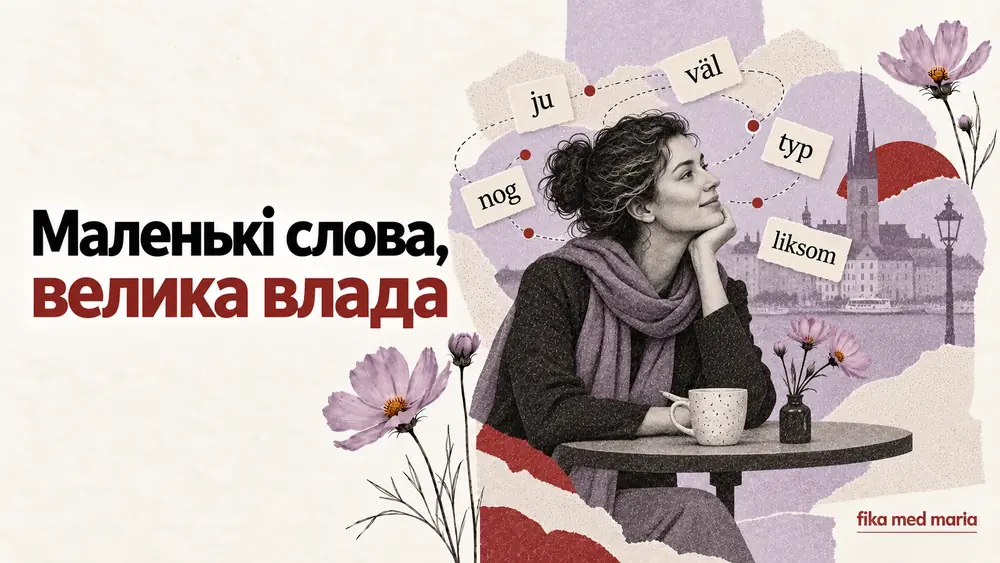
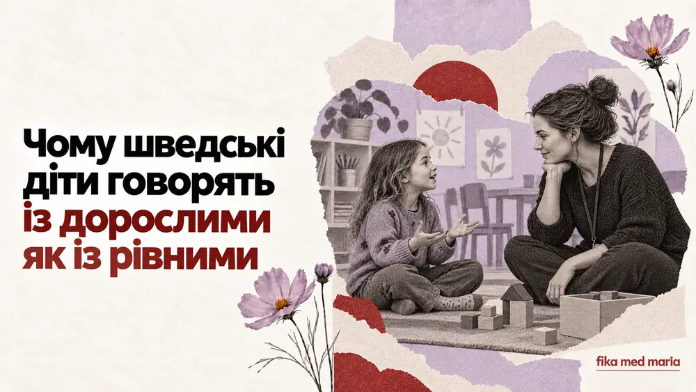
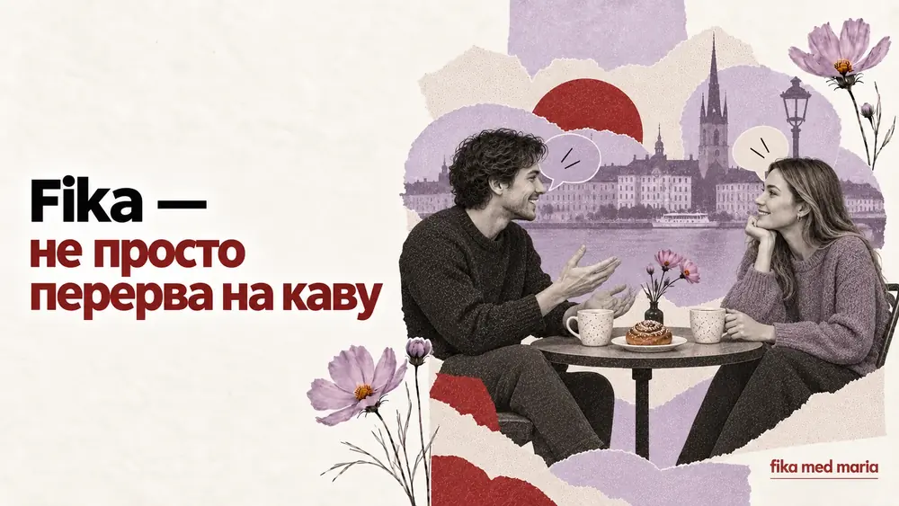
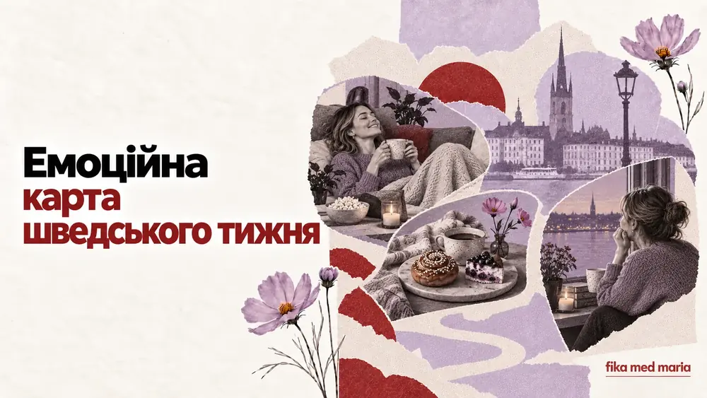
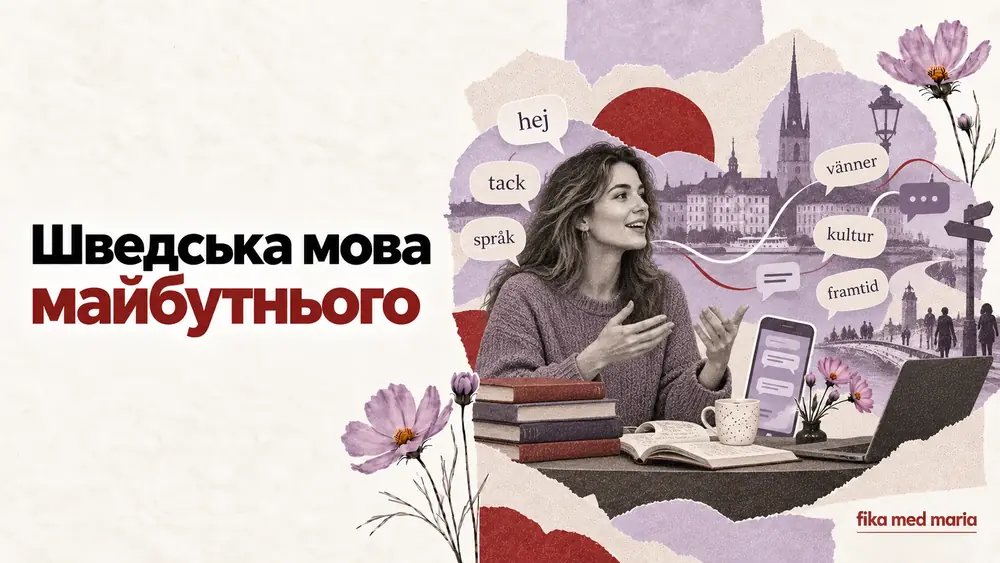

Чи можна звучати по-шведськи, не позбуваючись свого акценту
Чи потрібно позбуватися акценту, щоб добре говорити шведською? Розбираємо вимову, ритм, зрозумілість і реалістичні цілі.
Жива шведська, слова й вирази, культура Швеції, життя у Швеції та поради, як вчити мову регулярно.

Чи потрібно позбуватися акценту, щоб добре говорити шведською? Розбираємо вимову, ритм, зрозумілість і реалістичні цілі.

Чому шведська звучить по-різному в різних регіонах, що вважати стандартом і до якої вимови готуватися студенту.

Що означають prestigelös, förankra, avstämning, återkoppling та högt i tak — і як ці слова розкривають роботу у Швеції.

Чому особиста свобода у Швеції поєднується з чергами, домовленостями та правилами — через мову й повсякденні ситуації.
Чому розмовна шведська так відрізняється від навчальних діалогів? Розбираємо скорочення, частки та реальні фрази шведів.
Як розпізнати критику, відмову й роздратування у шведській мові, навіть якщо співрозмовник говорить спокійно та ввічливо.

Просте пояснення п'яти шведських слів, які змінюють тон речення: ju, väl, nog, typ і liksom — з живими прикладами.
Чому українці та шведи по-різному показують турботу, відмовляють і ставлять особисті запитання — з прикладами шведських фраз.

Чому шведські діти звертаються до дорослих на du, висловлюють незгоду й беруть участь у рішеннях — із корисними фразами для батьків.

Fika — це більше, ніж кава з булочкою. Як вона працює вдома й на роботі, про що говорять і які шведські фрази потрібні.

Як слова fredagsmys, lillördag, lördagsgodis і söndagsångest описують повсякденне життя та настрій тижня у Швеції.

Як англійська, соцмережі, молодіжний сленг і багатомовна Швеція змінюють сучасну шведську — і що з цього вчити студенту.